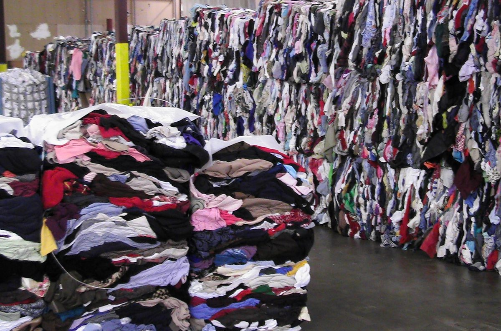
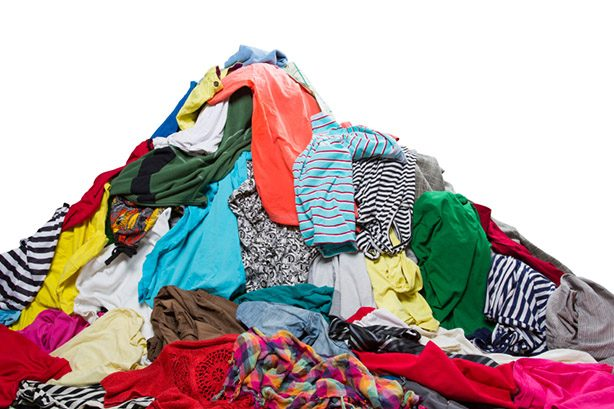
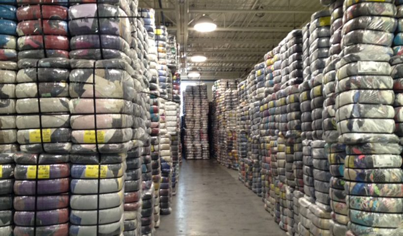

Established in 2010, Barkat Traders is a general trading company based in Lahore, Pakistan. We specialize in importing, processing/sorting and exporting used woolen clothes.
Beyond wool, we recover and recycle abandoned fishing nets, supply graded polyester yarn waste to European industries, and export premium quality basmati rice from Pakistan.
Barkat Traders strives to become a significant player in the used woolen clothes sorting, grading and sales business while championing a sustainable circular economy.
We are general traders, importers and exporters specialized in sorting different type of wool sweaters like, Cashmere, Marino and Mixed Wool. Our operations cover following domains.
Import used woolen sweaters from Europe & America. Sweaters are further processed to make them plausible in making of different wool products.

Assorted woolen sweaters are graded into diverse woolen content like Marino, Cashmere & mixed wool. Graded commodity is packed in bails for testing.

After passing complex quality assurance tests, these bails are packed, branded and exported to local as well as multinational consumers across the globe.

Winter is not a season, it's a Celebration
Cashmere, the fiber whose softness is as matchless as the beauty of Kashmir. This soft and fine fiber has taken its name in relation to the Kashmir goats. In comparison with sheep wool, cashmere fiber is stronger, lighter and softer. We export Cashmere Wool sweaters (Mutilated) for recycling. We sell in clips form and full pieces. Our products are quite ready for recycling and no any further processing is required to put them in pulling machine. The company collects the products from old clothing though label inspection and hand feel followed by sorting of the sweaters as per shades. Above all our cashmere means purely cashmere.
Merino Wool is a type of material that comes from Merino Sheep and is renowned for its exceptional properties. Wool possesses many characteristics which make it ideal, combined with merino it gives us the most likable material. Merino is finer more luxurious and much softer than the traditional wool. We deal in 100% pure Merino thin micron old sweaters with all shades.
Our stock contains mix wool sweaters from which stripped woolen rags are made after cutting & removing labels. This material consists of 85 % wool. All shades are available in this category.
Recovering discarded fishing nets and turning ocean waste into a circular economy
Discarded and abandoned fishing nets, often called “ghost nets”, are among the most harmful forms of marine pollution. At Barkat Traders we put our efforts into a circular economy: recovering these nets from our oceans and beaches, recycling them, and supplying the recovered material to global companies so our environment stays healthy and our seas stay clean.
We recover abandoned ghost nets from oceans and beaches before they harm marine life, seizing waste to keep our coastlines green and clean.
Collected nets are sorted, cleaned and processed back into the value chain. Collectors earn through the waste they gather, turning clean-up into income.
To date over 3 lacs tonnes of waste has been removed from the ocean and beaches and supplied to companies across the globe for reuse.
Recovering polyester yarn waste from Pakistan’s top producers for Europe’s geo-textile & fusion industries
We collect and grade polyester yarn waste sourced directly from the leading spinning and weaving mills of Pakistan. Every consignment is carefully sorted by type and quality, then exported to Europe where it is reprocessed into high-value raw material for the geo-textile and fusion (non-woven) industries — another step in our commitment to recycling and a sustainable circular economy.
We source polyester waste POY, DTY, FDY, HT and Water-Jet from Pakistan’s top yarn producers and sort it by type, colour and grade.
Graded waste is cleaned, compacted and baled to consistent export quality, ready to be re-fiberised and reused instead of going to landfill.
Our baled polyester is exported to European partners for use in geo-textiles and the fusion / non-woven fabric industry across diverse applications.
Basmati, a product of Pakistan
The continuous hard work of the farmers of Punjab and Sindh has made Pakistan one of the leading rice-producing countries. Pakistani aromatic basmati rice is the finest breed, appreciated worldwide. Our company has the capacity to export all types of basmati rice produced in Pakistan as per customer demand. Some of the major varieties of Pakistani rice are:
Get in touch — we’d love to hear from you
Lahore Office
25 km Multan Road, Maraca Stop, near Amrat Cola, TFB Road, Lahore
Karachi Office
Shed No. 01, Ansari Gudam, opposite Darvaish Weigh Bridge, Near Truck Stand, Gate No. 6, Maripur Road, Karachi
Phone
+92 345 8352222
Email Address
General traders, importers and exporters since 2010 — specializing in used woolen clothing, recovered fishing nets, polyester yarn waste and premium basmati rice.